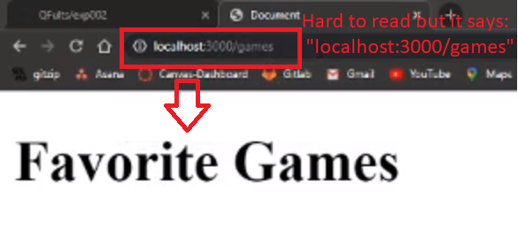

HTTP verbs:
.gitignore file needed so when you are pushing to github you don't have a million files to send up.
go to gitignore.io
type in windows and node on the search bar and hit create
copy the results and paste them in a file you create called .gitignore in the root directory of your app
Make a "server.js" file, then type in the console: "npm init -y" to initialize
Type "npm i express" in the console to install the express package
NOTE: if you cloned a repository, just type "npm i" to get all the packages it used. The above is only if you are starting the app from your local computer
NOW TO BRING EXPRESS INTO OUR PAGE WITH 3 LINES OF CODE BELOW:

Line 1 is to bring in the express package
Line 2 is to create an express server. We like to call it "app'"
Line 3 is to tell the app to listen on a port. 3000 is common dev practice
Now you can start the server by typing in the console: "node server.js" *nothing happens in browser
app.get('/test', () => {
})
The above means when you run "localhost:3000/test" in the browser you will define what happens with this function. We will try it with a console log below:


The code above only works if your "index.html" is in the same folder as your "server.js:
Now that we changed the file path, we also have to change the code so our app can find "index.html" it's no longer in the same folder as "server.js"

remember to put your front end files in a "public" folder.
**Adding in a little bit of de-structuring:
type the address in the browser: localhost:3000/games and you should see the html file render:
-Download Postman @ https://www.postman.com/downloads/
Open postman and then sign up or sign in.
Click on "launchpad" and then "create a request"

if you type "localhost:3000/games" like before, you can see the html file.
remember to save and stop and restart your server. CTRL+c to stop. node server.js to start
Note: an "app.get" in your code will not work with an "app.post" in postman. Both the verb and the route need to match for it to trigger. This also means you can use '/movies' for different verbs without conflictS.